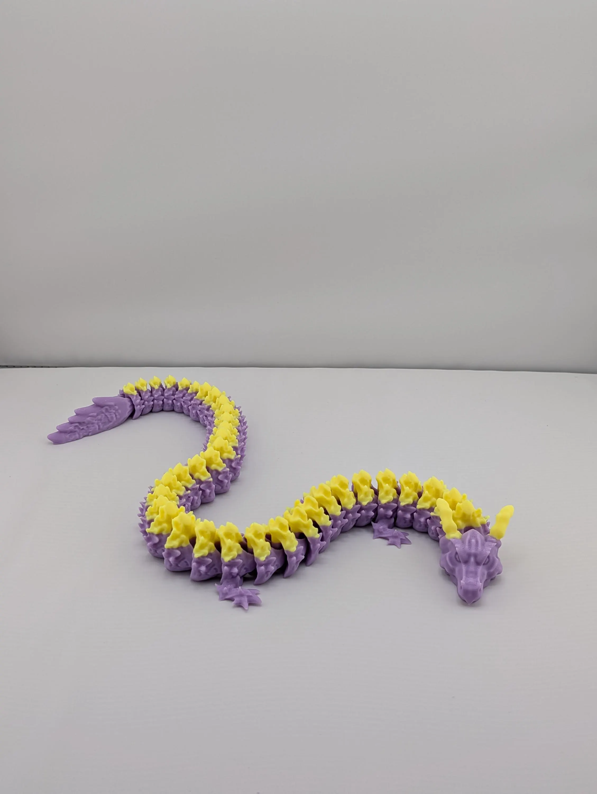

Glow Crystal Dragon
$15.00
By day, this stunning Crystal Dragon boasts a vibrant two-tone color scheme. After charging under a bright light, this dragon awakens with a spectacular luminous glow! The yellow scales erupt in a brilliant yellowish green light, while the purple body radiates a cool, ethereal blue.
This dragon is also a satisfying fidget toy. The fully articulated body moves with a smooth, fluid motion, creating a gentle, calming sound.
Highlights:
- Dual Glow-in-the-Dark: Features two different glowing colors.
- Fully Articulated: Provides a satisfying tactile and sensory experience.
- Dimensions: 21 inches long.
Note: Not recommended for very young children due to small parts.